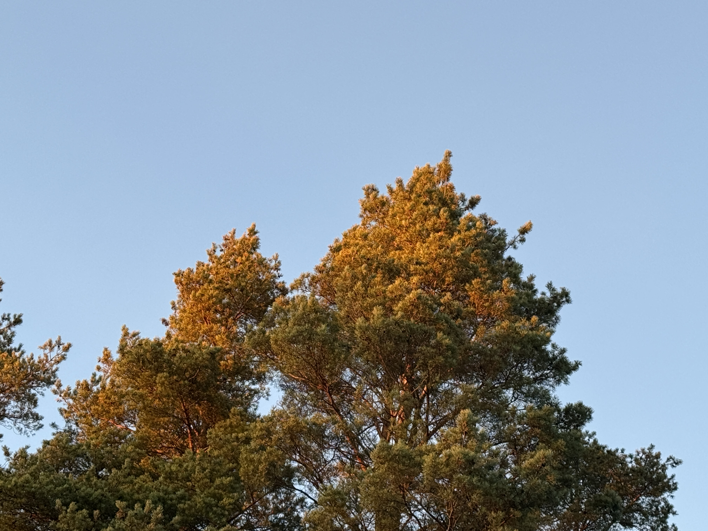
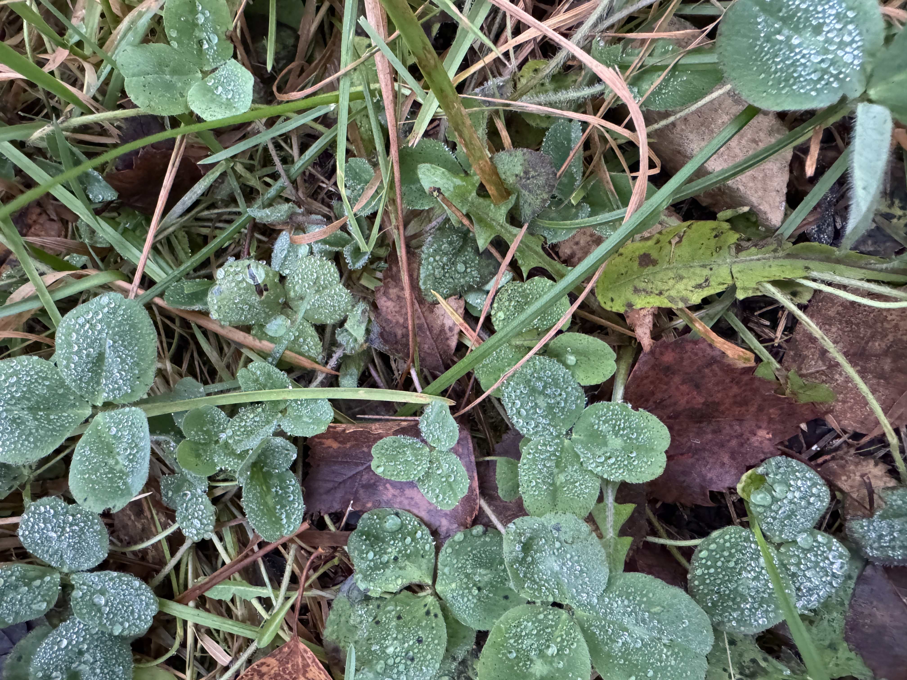

This is a process of changing or converting visual photos or images into compact digital formats to save storage space and enhance transmission through networks.
It involves the following:
The following aspects can be identified:

Sun rays can create a nice view between the sky and the trees.
The following aspects can be identified:
Sun rays can create a nice view between the sky and the trees.
The following aspects can be identified:

Nature picture with water drops.